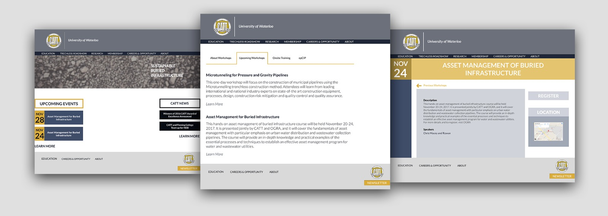
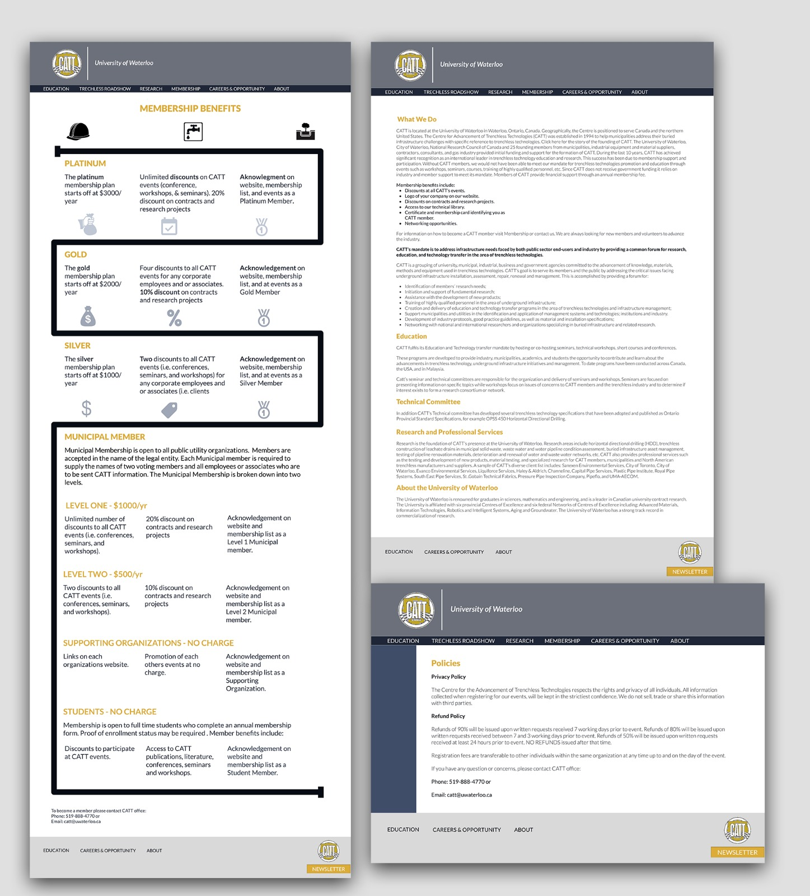
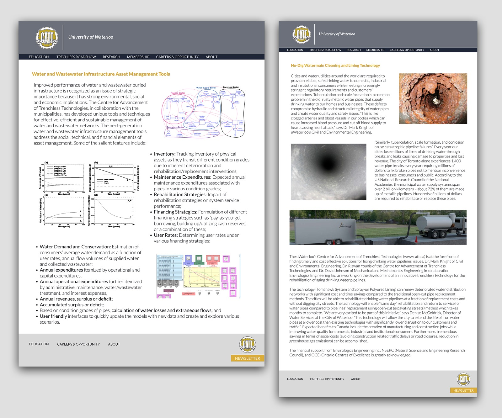

CATT WEB REDESIGN
THE PROJECT
CATT, short for, Center for Advancement of Trenchless Technologies, is an organization, located at the University of Waterloo, that assists cities in addressing issues they may be facing within their buried infrastructure. Their goal is to use trenchless technologies to solve these problems.
Over the past couple of months, I have been working with CATT to redesign their website. After a few iterations, the website design is now in the process of completion.
THE CHALLENGE
The company was unsure of who their target audience is, which was one of the reasons why the previous website was unsuccessful. Creating an effective user experience for an unknown user is impossible.
I then looked to observation to help me in identifying the users of the CATT website. By conducting several interviews and working with CATT’s partners and sponsors, I was able to narrow down the needs of the users.
I wanted to know the specific reasons why partnering companies use the CATT website. Below are some of the questions I asked when conducting interviews.

After receiving all feedback, the following were the most reoccurring answers.

THE DESIGN
During the brainstorming, I had many difficulties coming up with something that was not only simple, but made for a smooth experience. Although, the users main purpose was only to register for events, I am hoping for it to be more than that.
Adding the events to the homepage, is a great way to not only promote the upcoming events, but also for the users to get easy access to them as soon as they get on the website.
I also created a separate page for each event, with a register button and a location map so that the event goers can register right away.
For those who are looking to become new CATT members, I created an interactive infographic to provide them will all the membership details.
However, the design is still in the in finalizing process and will have many more improvements.


